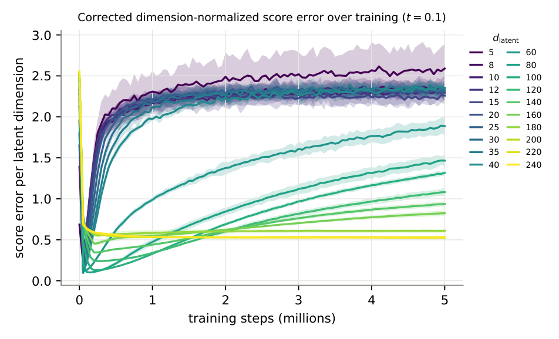
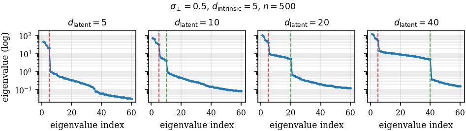

Why extra latent dimensions delay memorization
Latent diffusion models diffuse the output of an autoencoder, and that latent space is usually wider than the data needs. A face dataset might have a few dozen real degrees of freedom and live in several hundred latent dimensions. We looked at what the spare dimensions do to memorization.
The exact score function for a finite training set reproduces the training points, so a model that fits it perfectly memorizes. Real models take a long time to get there. Training goes from learning the distribution to fitting the individual samples, and the question is what sets the time of that transition. We held everything fixed and widened the latent.
The effect
The synthetic version has a known answer. The data is a mixture of Gaussians with intrinsic dimension 5, embedded in latent spaces of increasing width. The score network is an MLP with hidden width 256, five seeds per width, 5M steps. A generated sample counts as memorized if it is much closer to one training point than to its second-nearest.

The network and the data are the same in every run. Only the number of spare dimensions changes.
The same thing shows up in the score itself. Since the population score is known here, we can measure how far the learned score is from it on held-out data. Every width dips quickly as it learns the true distribution and then rises as it starts fitting the training set, and the rise starts later at larger widths. Out to width 240, the time for the error to double from its minimum grows from at most 100k steps (up to width 40) to 2.5M at width 140, and it is not reached within 5M steps at 160 and above.

The final error is about the same across widths up to 40, so wide latents don't prevent overfitting. They postpone it.
Because nearest-neighbor tests can lose sensitivity in high dimension, we checked the result two other ways. Running the test on the 5 signal coordinates only gives the same decline, and planted signal copies are detected at the same rate in both versions. A threshold-free alignment score between the learned and empirical scores reaches 0.75, 0.54, 0.39 and 0.31 at widths 5, 10, 20 and 40, and takes more than 30 times longer to pass 0.3 at width 40 than at width 5.
A spectral explanation
We used the random-feature theory of diffusion training from Bonnaire and collaborators. The feature-correlation matrix has a spectrum, and under gradient flow every mode is learned at a rate set by its eigenvalue. Signal modes have large eigenvalues and are learned first. Sample-specific modes have small ones and are learned last, and memorization needs them.
For data on a low-dimensional subspace of a wider latent, the spectrum splits into four blocks. The spare dimensions form a new noise-dimension block between the signal modes and the sample-specific modes.

The delay is set by the ratio of the smallest signal eigenvalue to the largest sample-specific one, not by how many modes sit in between. That ratio grows with width because extra coordinates lower the pre-activation variance of the random features, which moves them out of saturation and shrinks the sample-specific feature mass by more than an order of magnitude. Holding that variance fixed while widening the latent takes the growth of the ratio, over widths 40 to 240, from 3.17-fold to 1.09-fold.

Real images
On CelebA and CIFAR-10 at 32 by 32, we train a convolutional VAE at each latent width and freeze it, then train a depth-five MLP score model (hidden width 1024) on encodings of 1,000 training images, for 5M steps and five seeds. Memorization is the pixel-space nearest-neighbor ratio of 10,000 decoded samples.
Very narrow VAEs erase the identity of their inputs, so we only compare widths where the VAE's own reconstructions pass the same memorization test. Above that threshold, the step at which 5% of samples are memorized grows with width, by 3.6 times on CelebA and 1.4 times on CIFAR-10. FID follows a separate trade-off and is best at intermediate widths.
We also built a clock from the sample-mode eigenvalue of the frozen latent spectrum and tested it by fitting all widths but one and predicting the held-out one. The log error was 0.41 on CelebA and 0.15 on CIFAR-10. It gets the ordering of widths right but not the scale: over the full CelebA sweep it captures 1.78 times of a 3.9-fold slowdown, and the fitted constant differs by about 2 times between datasets. We report it as a diagnostic.
What isn't shown
- The mechanism is verified in the random-feature network, not in trained networks. In the trained MLPs the first-layer pre-activation variance is the same at every width at initialization (0.20 at width 5, 0.19 at width 40) and separates only later, so we cannot say that width sets the variance and the variance causes the delay.
- A pilot with a DiT denoiser on a 4 by 4 grid of latent channels does not show the decline. The effect is established for vector latents with MLP denoisers.
- All sweeps use at most 1,000 training points. A sweep that scales network width with latent width is a capacity sweep, which is a different question.
I presented the workshop version at ICML 2026 in Seoul, with Ryan Shahbaba, Kevin Peng and Avni Garg. The extended ICLR 2027 submission, under review, is with Ryan.